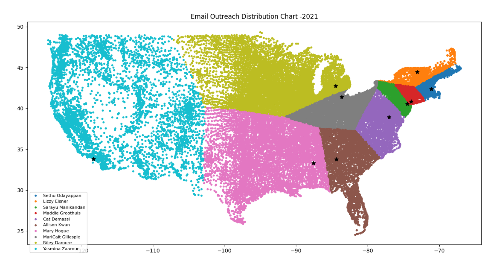
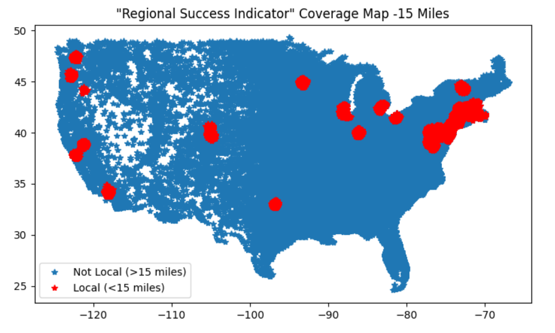
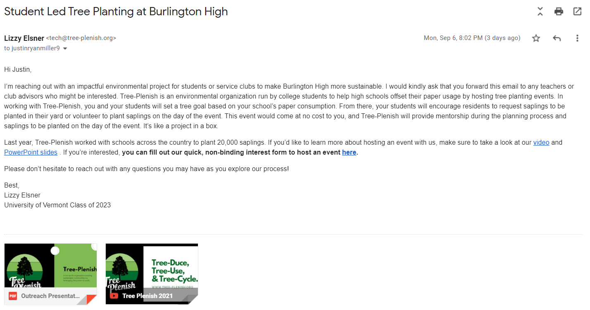

Tree-Plenish Targeted Outreach
Various software and processes used in directing a nationwide targeted advertising campaign.
Email-Drips
Custom email automation software designed to utilize Tree-Plenish's unique student network. Incorporates two seperate familiarity modes, engagement tracking, and traditional message personalization. Used for >10,000 administrator, teacher, and club advisor addresses obtained through a combination of manual retrieval, and past email lists.
Local Ambassador - Familiarity Networking
To take advantage of Tree-Plenish's staff across the country, the "Local Ambassador" module spoofs the sender & signoff information of an employee in a geographically advantageous position to highlight our locality. The distribution was assigned algorithmically using weighted distances. (Note: All names used had volunteered).
Regional Success Indicator - Familiarity Networking
To take advantage of last year's events a regional indicator is used in the relevant territories. This translates into an added paragraph describing the closest event's successes to show the applicability for a Tree-Plenish event in the region.
Read Receipts - Engagement Tracking

Our engagement tracking system was incorporated by embedding redirecting links into the email content. From this data we can analyze trends in time-based engagement as well as modify follow-up content tuned to how many emails had been opened (see the engagement tracking page for more info on our ethical concerns and privacy protection).
Template and Results
Overall, the campaign has been showing a 15% conversion rate from engagement (opened email) to further communication. Using last year's last-mile conversion rate of 35% and average event revenue (~$1000), we have a very healthy ROAS of ~45, meaning that each dollar spent on technical infrastructure and AWS services for this campaign will return $45 in revenue.